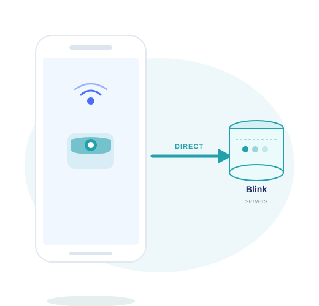
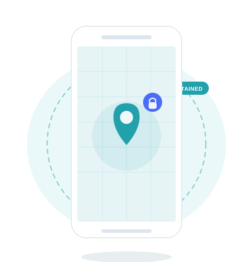

GeoCam is built on a simple principle: your Blink credentials, your camera commands, and your location never touch our servers. Everything happens directly between your device and Blink.
Your Blink username and password are stored exclusively in your phone's secure local storage. They are never transmitted to GeoCam servers — not during login, not during use, not ever.

When GeoCam arms or disarms your cameras, the request goes directly from your phone to Blink's servers. GeoCam servers act as no intermediary — there is no proxy, no relay, no middleman. The connection is identical to what the official Blink app makes.
Your GPS coordinates are used locally on your phone to detect when you enter or leave your home zone. Your precise location is never uploaded to GeoCam servers.

GeoCam authenticates with Blink using OAuth2 with PKCE — an industry-standard flow where the authentication token is generated and stored entirely on your device. There is no server-side Blink session maintained by GeoCam.
GeoCam does use Firebase for two limited purposes: Crashlytics collects anonymized crash reports to help us fix bugs, and Analytics collects anonymized usage data (e.g. app opens, feature usage). Neither service has access to your Blink credentials, camera commands, or precise location.
For the full picture of what data we collect and how, see our Privacy Policy.